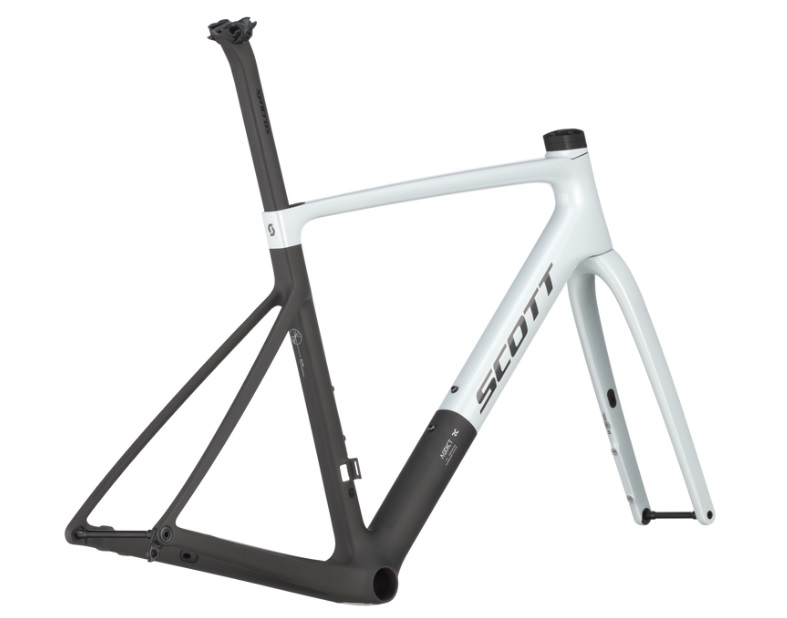
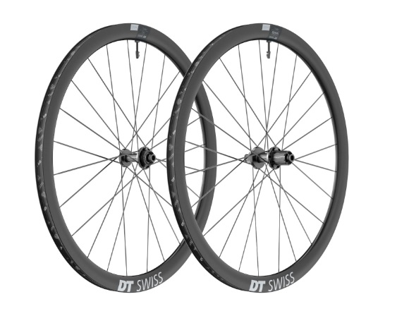
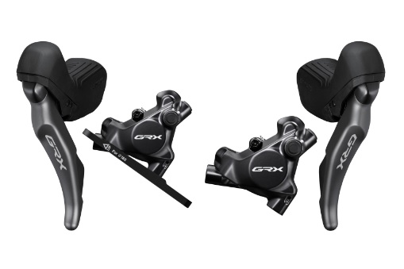

Road Kerékpár
A road kerékpárok a leggyorsabb kerékpárok, amelyeket aszfaltos utakon való közlekedésre terveztek. Ezek a kerékpárok könnyűek és aerodinamikusak, így ideálisak hosszú távú tekerésekhez és versenyzéshez.
Fő jellemzők
- Váz: Könnyű és merev anyagokból készült, mint például karbon vagy alumínium.
Ezek már csak tárcsafék rögzítésre alkalmasak.

- Kerekek: Vékonyabb gumik, amelyek csökkentik a gördülési ellenállást.

- Fék: Általában hagyományos fékek vagy tárcsafékek.
A mai vázak már csak tárcsafékes rögzítésűek.

- Kormány: Országúton manapság nagy előnyben részesítik az aero és integrált kormányokat. Ami egyben van a kormányszárral.
Előnye, hogy könnyű, merev és jó kinézetű. hátránya viszont, hogy drága és ha a kormányszár hossza nem megfelelő, akkor sajna az egészet ki kell cserélni.
A mai vázak már csak tárcsafékes rögzítésűek.

- Váltás: Az elit kategóriában már csak elektromos váltók vannak, amiket akkumulátor működtet.
Ezeket az akksikat a nyeregrúd-ba szokták elrejteni a Shimnaonál. Sramnál egyszerűbben oldották meg, egyszerűen kipattinható az akksi.
A váltókarok mindkét nagy gyártónál már vezeték nélkül kommunikálnak a vátlókkal.